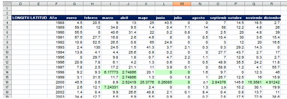

Tool for synthetic hietograms generation
I did my 3 moth ERASMUS internship at the University of Technology in Cartagena (UPCT) in Spain. I took a part in a research project between university and private water distribution company Hidrogea, called Preparation of synthetic hyetographs for City of Cartagena
Background:
The company Hidrogea, concessionaire of the Water Service of Cartagena, was carrying out a revision of the mathematical model of the sewage and rainwater networks of the city of Cartagena. To carry out this revision it was necessary to have synthetic hyetographs for different return periods made from historical series.
My role:
Creating Excel/Python-based tool for the generation of synthetic hyetographs through the Alternating Blocks method.
The tool gets annual maximum series of precipitation depth for a given duration. Then, uses /Gumbel distribution to find precipitation depth for selected return periods and print depths versus duration for different frequencies. In the next step, the design precipitation hyetographs are plot using IDF relationships (Alternating block method).
Excel/Python tool interface

Excel sheet where the precipitation data is filled using monthly correlation
Monthly correlation between three gages
Additionally, there is an option to generate double-mass curve of precipitation data of available stations.
Example of a double-mass curve
Outcome:
The Python-based tool in excel that generates the design hyetograph through the Alternating Blocks method.
Example of a calculation result